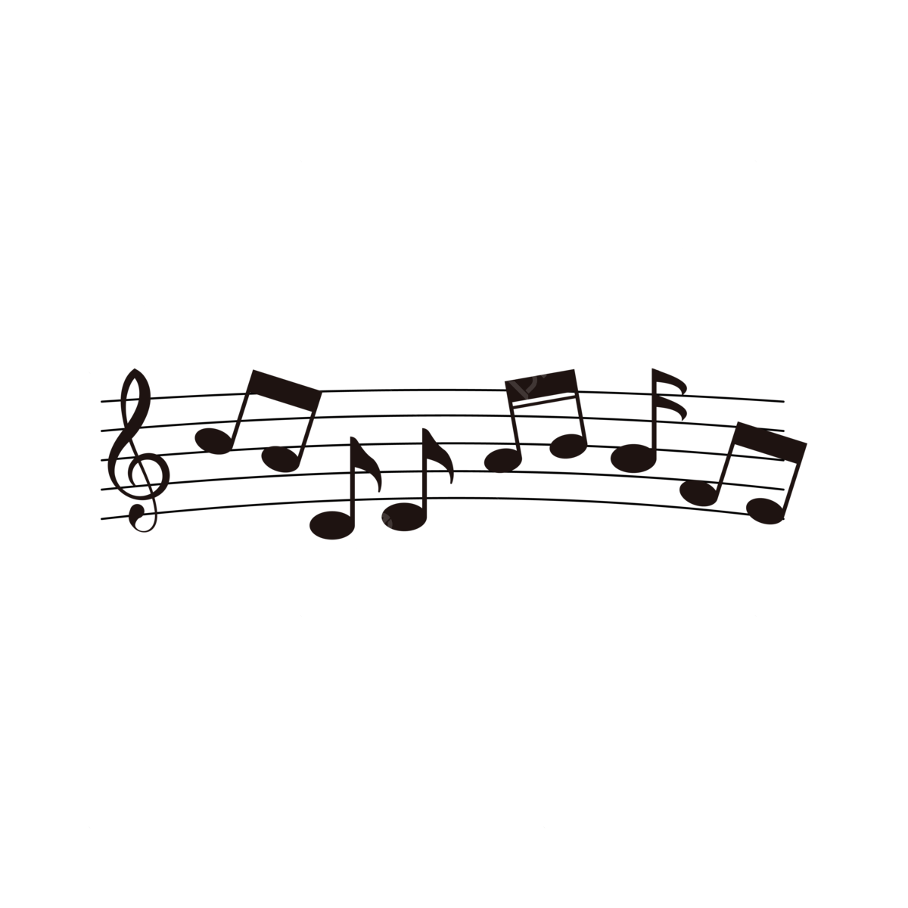

primeiro decida velocidade que quer ler para começar a audiodescrição
Velocidade: 1.0xNesses primeiros módulos, você irá aprender primeiramente o que é a música, após este aprendizado, você irá aprender as tão desejadas cifras de violão. Nós sabemos que é chato mas é algo extremamente necessário pois a base de todas as músicas é a teoria musical, desta maneira, tentaremos manter as coisas menos entediantes possíveis. obrigado e bons estudos!
A música é a arte dos sons, a música é a mais antiga tipo de arte, desde os primórdios da terra já havia indícios de música e ao longo do tempo foram se evoluindo até o que conhecemos hoje.
Na música existem dois tipos de sons, os naturais e produzidos:
Ritmo é a divisão ordenada dos tempos, você já parou para pensar como as orquestras conseguem tocar sincronizadas? Elas tocam assim pois cada figura tem o seu valor e todas as partituras são escritas para se completarem, gerando aquele som agradável de se escutar. A seguir veremos as principais propriedades da música
Harmonia é a junção de sons que tocadas juntas criam um som harmônico igualitário entre si, os sons que vemos nas orquestras são notas diferentes para cada instrumento porém pela tonalidade do instrumento os sons se igualam sem nenhum se sobressair dos outros.
Melodia é basicamente os sons ordenados com intervalos, tempos de notas, sequencias e ritmo. É o que traz a característica de uma música
As principais propriedades da musica são: Timbre, Duração, Intensidade e Altura
Ao todo nós temos 7 notas musicais elas são: DÓ, RÉ, MI, FÁ, SOL, LÁ, SI. Mas dentro de cada nota temos tons e semitons. Tom: Tom é a maior diferença sonora que pode haver entre uma nota e outra, por exemplo da nota DÓ para o RÉ temos um tom completo dividindo. Semitom: Ao contrário do tom, o semitom é a menor diferença entre as notas, como por exemplo da nota SI para a nota DÓ temos um semitom de diferença. O que significa que se vermos um SI# em alguma música significa que você deve tocar um DÓ natural. Se você não entendeu muito bem, não há problema algum pois nosso próximo assunto é assunto é exatamente esse.
Os acidentes tem nomes fixos chamados Bemóis e os Sustenidos nós imaginamos que você apaixonado por música já ouviu falar deles, mas se você não sabe como funciona vamos explicar a seguir:
Um metrônomo é um dispositivo usado para medir intervalos de tempo através de um clique audível em cada batida e pode realmente ajudar um músico a identificar quaisquer erros de tempo que possa estar cometendo, além de tocar cada ritmo com mais precisão e exatidão. Ou seja, é um contador de tempo para o músico sempre tocar em harmonia com os outros músicos, claro que em uma orquestra por exemplo não haverá um metrônomo para medir os tempos, normalmente os músicos usam a batida do próprio pé como metrônomo. Se você chegou até aqui parabéns você terminou a teoria musical, mas lembre isto é o básico sempre procure se aprofundar mais na música, pois quanto mais esforço mais resultados, agora você irá aprender as cifras que são o objetivo principal do projeto.
Agora, a partir daqui você vai começar a aprender a realmente a ler as cifras para entender o que cada parte dela quer dizer para você poder começar a tocar qualquer música que você quiser.
Para aprender a ler cifras temos que aprender a montar acordes no violão, e para aprender temos que aprender o que são, e como montar um acorde. Então vamos lá: um acorde é um conjunto de três notas juntas, então vamos relembrar quais são as notas, Dó, Ré, Mi,Fá, Sol,Lá, Si, e aí volta para o Dó, nas cifras eles usam uma outra forma de representar as notas, que na minha opinião é uma forma mais fácil de aprender do que Dó, Ré, Mi…, eles usam letras do alfabeto! então as notas ficam assim:
Dó = C
Ré = D
Mi = E
Fá = F
Sol = G
Lá = A
Si = B
E quando as notas são sustenidas ou bemois ela é representada com o “#” e o “b” na frente da nota, para exemplificar vamos usar a nota C(Dó): Assim ficaria C# e assim ficaria Cb. Agora vamos aprender a como montar um acorde, eles são feitos por 3 notas que são a Tônica, a Terça, e 1 tom e meio da Terça, sendo a tônica a nota que dá nome ao acorde a terça a nota 2 Tons depois da tônica e 1 tom e meio depois da terça, para exemplificar vamos usar o acorde de “C”(Dó):
acorde: C(dó) = C(dó),E(mi),G(sol)
2T T/2
C —--> E—----> G
T= 1 Tom
T/2= meio tom
Agora com os acordes explicados podemos passar para entender a cifra de vez. Nas horas que a cifra possuir a letra da música aparecerá o acorde que precisa ser tocado na hora em cima da letra da música, ele vai aparecer bem na exata hora em que precisa ser tocado, por exemplo na Cifra da musica Boate Azul:
Cm
Doente de amor procurei remédio
Bb
Na vida noturna
Ab
Com a flor da noite
G
Em uma boate aqui na zona sul
O Cm(dó menor) será tocando na hora em que na música acabar de dizer “amor” e assim por diante.
E já em uma tablatura, que geralmente é para representar algum solo, aparecerá as 6 cordas do violão e o número da casa que precisa estar sendo tocada, por exemplo na música de parabéns você tocaria apenas na corda E(mi) que fica mais embaixo do violão(a mais aguda), então tocaria duas vezes a corda solta depois na segunda casa, ai teria um espaço representando uma pausa e começaria tocando a corda solta, a quinta corda depois a quarta corda.